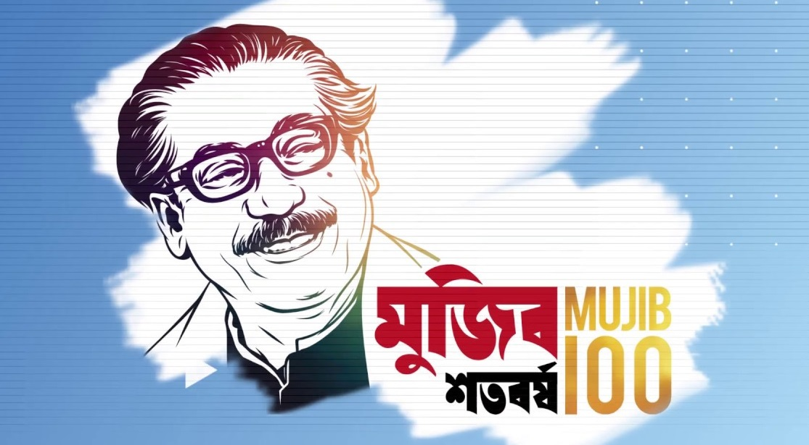

মাধ্যমিক ও উচ্চ মাধ্যমিক শিক্ষা বোর্ড, যশোর
Board of Intermediate and Secondary Education, Jashore

৭ই মার্চের ঐতিহাসিক ভাষণ
Notice Board:
-
*যশোর জেলার বাঘারপাড়া উপজেলাধীন সম্মিলনী মাধ্যমিক বিদ্যালয়ের এডহক কমিটি গঠনের অনুমতি প্রসঙ্গে
-
*যশোর জেলার মণিরামপুর উপজেলাধীন লখাইডাঙ্গা মাধ্যমিক বিদ্যালয়ের এডহক কমিটি গঠনের অনুমতি প্রসঙ্গে
-
*ঝিনাইদহ জেলার হরিণাকুন্ডু উপজেলাধীন রিশখালী মাধ্যমিক বিদ্যালয়ের এডহক কমিটি গঠনের অনুমতি প্রসঙ্গে
-
*২০২৩ সালের এইচএসসি পরীক্ষায় অংশগ্রহণেচ্ছু প্রাইভেট পরীক্ষার্থীদের জন্য বিজ্ঞপ্তি
-
*অষ্টম, নবম এবং দশম শ্রেণির অভ্যন্তরীণ পরীক্ষাভিত্তিক চূড়ান্ত পাঠ্যসূচি বিভাজন ২০২৩।
-
*২০২২-২০২৩ শিক্ষাবর্ষে একাদশ শ্রেনিতে অনলাইনের মাধ্যমে ভর্তিকৃত শিক্ষার্থীদের রেজিস্টেশন প্রসেঙ্গে
-
*জনাব শেখ আব্দুর রফিক, জুনিয়র অডিটর -এর আন্তর্জাতিক পাসপোর্টের এনওসি
-
*জনাব মোঃ হুমায়ুন কবির, হিসাব রক্ষক (চলতি দায়িত্ব) -এর আন্তর্জাতিক পাসপোর্টের এনওসি
Md Shojib Hossain
Dept. of CSEJashore University of Science and Technology